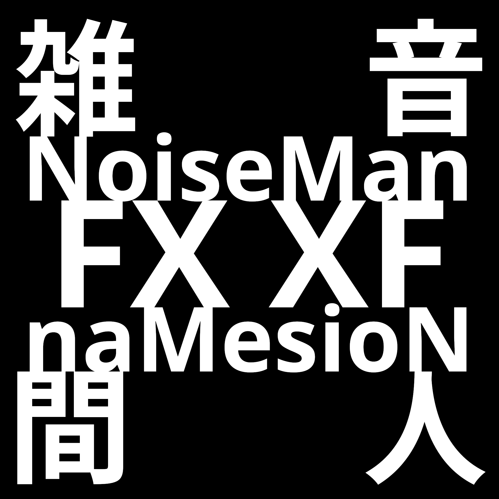

I am NoiseMan.
I materialize and create the blueprints in my mind.
This plugin is a VST3 for Windows only.
I am releasing the code for the advancement of digital audio. Please feel free to modify and use it under the MIT license.